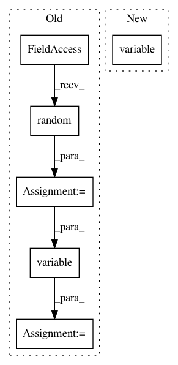

b95fcf7f52aca8ad0b1afb3cfc64c8eed534fafe,tests/keras/backend/backend_test.py,,check_single_tensor_operation,#Any#Any#Any#,43
Before Change
def check_single_tensor_operation(function_name, input_shape, backend_list, **kwargs):
val = np.random.random(input_shape) - 0.5
z_list = []
for k in backend_list:
if k == KCSD:
z = cntk_func_single_tensor(function_name, input_shape,
**kwargs)([val])[0]
else:
z = k.eval(getattr(k, function_name)(k.variable(val), **kwargs))
if hasattr(z, "_keras_shape"):
assert z._keras_shape == z.shape
z_list += [z]
for (z1, z2) in zip(z_list[1:], z_list[:-1]):
assert z1.shape == z2.shape
assert_allclose(z1, z2, atol=1e-05)
def check_two_tensor_operation(function_name, x_input_shape,
y_input_shape, backend_list, **kwargs):
xval = np.random.random(x_input_shape) - 0.5
yval = np.random.random(y_input_shape) - 0.5
After Change
z = cntk_func_single_tensor(function_name, x_shape,
**kwargs)([x_val])[0]
else:
z = k.eval(getattr(k, function_name)(k.variable(x_val), **kwargs))
else:
z = k.eval(getattr(k, function_name)(x_shape_or_val, **kwargs))
z_list += [z]
In pattern: SUPERPATTERN
Frequency: 3
Non-data size: 6
Instances
Project Name: keras-team/keras
Commit Name: b95fcf7f52aca8ad0b1afb3cfc64c8eed534fafe
Time: 2017-07-29
Author: me@taehoonlee.com
File Name: tests/keras/backend/backend_test.py
Class Name:
Method Name: check_single_tensor_operation
Project Name: keras-team/keras
Commit Name: ae72ea0bfe7f7041d6f7580427fa1f69158bab7e
Time: 2018-03-05
Author: me@taehoonlee.com
File Name: tests/keras/backend/backend_test.py
Class Name: TestBackend
Method Name: test_rnn_no_states
Project Name: keras-team/keras
Commit Name: b95fcf7f52aca8ad0b1afb3cfc64c8eed534fafe
Time: 2017-07-29
Author: me@taehoonlee.com
File Name: tests/keras/backend/backend_test.py
Class Name: TestBackend
Method Name: test_spatial_2d_padding